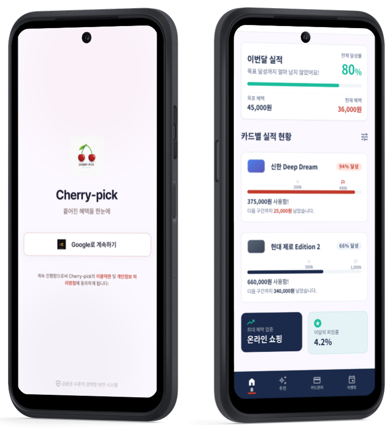
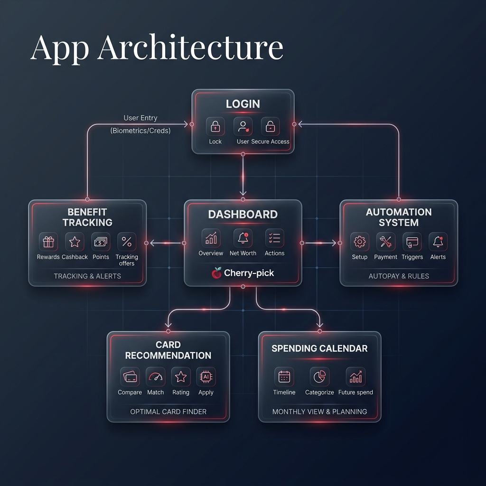

파편화된 카드 생활을 하나로 통합합니다.
기술이 제안하는 가장 현명한 소비의 시작, 체리픽.
ALGORITHMIC SPENDING GUIDE
사용자의 소비 패턴을 실시간으로 분석하여 전월 실적과 혜택 한도를 정밀하게 트래킹합니다. 당신의 지갑은 이제 데이터로 말합니다.

수동 입력의 시대는 끝났습니다. 자동화된 파싱 엔진이 모든 결제 내역을 즉각적으로 분류하고 반영합니다.
SMS 및 앱 푸시 알림을 분석하여 즉시 데이터화
클라우드 기반 실시간 지출 내역 업데이트
소비 업종별 자동 통계 및 리포트 생성
사용자 경험을 최우선으로 설계된 체리픽의 핵심 기능을 확인해 보세요.
복잡한 금융 정보를 가장 직관적인 형태로 전달합니다. 한 번의 탭으로 모든 혜택을 제어하세요.
"가장 강력한 기술은 보이지 않아야 한다."
